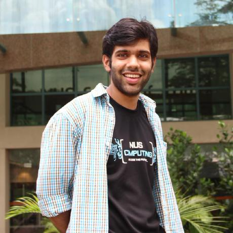

About Me
I am a
I love to work on new technologies and I am always game to try out new things. I employ a very basic approach -
Apart from computer science I love to read and indulge in outdoor sporting activities. I am an above average player of table tennis and pool/snooker (at least I like to think so ).
).
Master of Computing Student
atSchool of Computing, National University of Singapore
. I will be graduating in December 2015. I have profound interest in concepts related toApplication/System Integration and Automation
. I recently started working on topics related to web such asWeb Application development
andWeb Security
. I have been working on a few projects to get my hands dirty in this field.I love to work on new technologies and I am always game to try out new things. I employ a very basic approach -
"Knowing is not enough, we must apply"
. I am always inclined towards doing hands-on work besides understanding theoretical concepts.Experimentation is the key!!
I love to work in an environment where I can see the impact of my work on user base and interact with user/client.
Apart from computer science I love to read and indulge in outdoor sporting activities. I am an above average player of table tennis and pool/snooker (at least I like to think so
Professional
Currently I am working as a Software Intern at
Quantum Inventions
. I am working on a couple of things at QI -- Migrating web service calls and data manipulation infrastructure developed on Ruby to another technology, namely
Talend
, which provides an unified platform for data integration across different platforms. This tool is based onJava
- I am also working on a web application that generates advertisements based on population of a particular area and current time.
During my semester, before joining QI, I was appointed as
Teaching Assistant
for one of the under graduate modules at NUS. This was a Data Structure and Algorithm module (CS1020E). Following were my responsibilities as a TA:- Organized weekly lab sessions for enrolled students
- Discuss questions from there programming assignments for data structure and algorithms
- Meticulously analyze student's submission as part of graded submission
- Make presentation for solutions of some of the algorithmic prblems given to students
ZS Associates
as an Technology Associate (2013-14). ZS Associates provided technological solutions in the field of sales and marketing consultancy. Here is a brief description of my work at ZS:- Design and develop system for managing organization wide hierarchy and sales force deployed in the field
- Develope
ETL
flows to process data and application of business rules - Automating the system for daily and monthly runs
- System testing, System integration and testing and operationalizing the system
- I was also involved in increasing system's efficiency
- Developing unified ordering system on
Concept Wave
, a tool based onJavaScript
- Organized team wide training sessions and constant feed back
Academics
So far, my coursework at
NUS
included -- Computer Vision and Pattern Recognition
- Robot Motion Planning a control
- Systems Security
- Web Security
- Hands on with Business Analytics
- Simulation and Modelling techniques
National Institute of Technology, Bhopal, India
in 2012. Some of the courses that I took were-- Relational Database Mangement Systems
- Analysis and Design of Algorithms
- Operating Systems
- Artificial Intelligence
- Computer Networks
- Computer Architecture
algorithms for autonomous robots
. I also worked onImage Processing
usingMATLAB
, Serial and Parallel Communication and Embedded Systems.

I have put all my work on git hub, most of which is publicaly accessible. Feel free to fork any of the repo and let me know in case you need any extra information about these projects. The link to my GitHub account is
- https://github.com/harshulgandhi
To know more about me, you can visit any of the social sensors mentioned right below my picture.